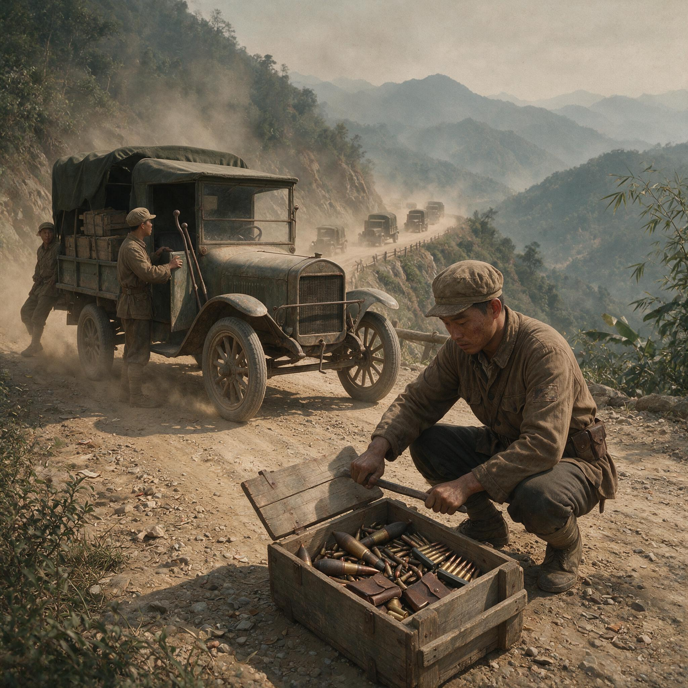

第 5 章
士兵底色与体系缺口
军需官蹲在卡车后轮旁，用铁条撬开一只木箱。箱盖上白漆标着“七九口径”，箱内的弹夹却长短不一。他拣出一排六五口径的，在掌心掂了掂，又放回去。

混乱的军需补给场景
AI 生成插图，非史实影像。
那是1942年1月末，滇缅公路正被旱季的尘土裹着，南行和北行的车队都在同一条窄窄的灰黄路面上挤。他撕下一块牛皮纸封套，用铅笔写：实到弹药与配属武器口径部分不符，需前方自行调剂。然后他在“自行调剂”下面划了一道横线。
这道横线下面压着的事实，不是某个军需官的疏忽，而是一支军队的起点。
此刻，从滇西到缅北的公路沿线，中国远征军的先头部队正在向集结地域运动。他们中的大多数人并不知道自己要去的地方叫什么名字，不知道将要面对什么样的敌人，更不知道远在重庆和伦敦的会议室里，他们的生命已经被折算成租借物资的吨位、指挥权的分配比例和战后谈判桌上的筹码。
他们知道的只是脚下这条路很长，背包很重，口粮不足，而长官的命令必须服从。要理解这支即将进入缅甸的军队，需要先回到它诞生的土壤里去。
以1941年秋季补充至第五军的新兵第三团为例——第五军是中国陆军中装备最好的机械化部队，其新兵补充质量在全部队中已属上乘。该团兵员抽样记录显示：士兵籍贯覆盖四川、湖南、湖北、河南、安徽、江西、贵州、云南八省，年龄集中在十八至二十五岁之间，入伍前职业百分之八十以上为农民，其余为手工业者、小贩或流亡学生。
识字率不足百分之十五。多数人在入伍前从未见过火车，从未使用过电话，从未接受过任何形式的军事训练。
他们被征召的方式各不相同。有的来自保甲抽丁，有的顶替了富户出钱买免的名额，有的是在赶集路上被拉了壮丁，也有少数是自愿投军——因为家乡沦陷，或是家里实在揭不开锅。
不管来路如何，他们到达补充兵训练处之后的第一件事，是领一套粗布军装、一双草鞋和一支步枪。
步枪也不是统一配发的。同一份兵员接收记录显示，该团一千二百名新兵在入营时领到的步枪涵盖四种型号：德国造毛瑟标准型、捷克造Vz.24、巩县兵工厂仿制的中正式，以及数量不等的汉阳造。
理论上，一个补充兵团应统一配发中正式，但实际库存不足以满足需求，军械库只能有什么发什么。四种步枪使用三种不同规格的子弹——七九圆头弹、七九尖头弹和七九轻尖弹——尽管口径标称相同，但弹道性能、供弹方式和零件互换性都存在差异。一名士兵如果在战斗中缴获了同伴的步枪，他未必能把自己的子弹装进去。
这还不是最复杂的局面。同属远征军序列的第六军下属某师，其轻机枪配备状况更能说明问题。该师一个标准步兵连编制表上列有九挺轻机枪，实际到位的六挺中，两挺是战场上缴获的日本大正十一年式歪把子机枪，使用六五口径子弹；三挺是比利时造勃朗宁自动步枪，使用七九口径子弹；还有一挺是马克沁水冷式重机枪临时下放充数，使用另一种七九子弹。
全连的弹药补给因此分裂为两条互不相通的链条：六五口径弹药依赖缴获和库存旧货，七九口径弹药则要区分两种不同的装药量。连长在战前检查时发现，勃朗宁机枪的备用枪管已经磨损，而缴获的歪把子机枪的供弹漏斗弹簧疲软，连续射击超过三十发就会卡壳。
他在报告中写：“火力持续性难以保证。”这句话翻译成战场上会发生的事情就是：当敌人的机枪开始第二轮扫射时，你的机枪可能已经停了。
这些细节不是孤立的混乱。它是中国陆军自晚清新军以来数十年军事现代化路径断裂的浓缩。从北洋到国民政府，从德国顾问到苏联援助再到美国租借，装备体系经历多次转向却从未完成统一。每一批外购或仿制的武器都在军队里留下一个子系统，子系统之间互不兼容，最终在基层连队里凝结成一份万国牌武器清单。一个士兵从入伍到上战场，首先要学会的不是如何杀敌，而是如何辨认自己手中这支步枪的口径、膛线磨损程度和退壳钩的脾气。
训练本应弥补装备的缺陷。但训练本身也是断裂的。军政部1940年颁布的《新兵教育纲领》要求每名新兵完成二百小时基础训练，内容涵盖队列、射击、刺枪、手榴弹投掷、简易工事构筑和夜间战斗基础。然而这份纲领在大多数部队里只是一纸空文。前线战事频繁，兵员消耗速度远超训练周期。
一个补充兵从入伍到编入作战部队，中间留给训练的时间通常只有两到四周。在两周内，教官能教给他的东西极其有限：立正稍息、持枪动作、卧倒起立、瞄准击发——基本上就是这些。班排协同战术、火力配置原则、地图判读、通讯联络、战场救护等课目要么压缩到一两个小时的理论讲解，要么直接跳过。
第五军直属补充兵训练处的一名教官在1941年的工作日志中记录了典型的一周训练安排：周一上午队列，下午步枪分解结合；周二全天实弹射击，每人五发子弹；周三刺枪基本动作；周四上午手榴弹投掷练习（用木柄教练弹代替），下午政治教育；周五班进攻战术理论讲解（沙盘演示）；周六全副武装行军十五公里。
一周结束，新兵们打了五发实弹，投了三次教练弹，听了一堂听不懂的战术课，走了十五公里山路。
然后下一周重复类似的内容，或者因为前线急需补充而提前结束训练。这名教官在日志边缘写道：“兵员素质尚可，能吃苦，服从性好。然训练时间过短，射击基础不固，更遑论班排战术。
此等新兵补入部队后，仍需老兵带领方能作战。”他没有写出来但隐含在字里行间的事实是：如果这些新兵被补入一支伤亡惨重、老兵所剩无几的连队，他们将几乎没有机会在战场上学会如何生存。
射击训练的弹药配额最能说明问题。按照训练大纲，每名新兵应完成至少五十发实弹射击训练，包括一百米立姿、二百米跪姿和三百米卧姿三种姿势。但实际配发的训练弹药通常只有十到十五发。一些非嫡系部队甚至只能分到五发。五发子弹打完，射手还没有找到准星与目标的正确关系，训练就结束了。这样的士兵到了战场上，面对的是每天消耗数百发子弹的日军射手。差距不是在勇气层面产生的——它是在训练场上就已经被子弹的数量决定了。
后勤补给链的脆弱进一步放大了所有缺陷。滇缅公路是远征军的生命线，但这条生命线本身纤细而脆弱。从昆明到畹町全程九百余公里，穿越横断山脉南段，路面狭窄多弯，雨季塌方频发，旱季尘土蔽日。一辆载重两吨半的道奇卡车从昆明出发，理论上五天可抵达腊戍，实际上平均需要七到十天。
沿途没有完善的兵站体系——补给站之间距离过长，仓库容量不足，油料储备常常告罄。车队走到半路发现前方兵站无油可加，只能原地等待下一批油罐车从昆明出发。这一等可能就是两天。
更致命的是运力缺口。远征军入缅初期总兵力约十万人，按每日人均消耗粮食一点五公斤、弹药及其他物资零点五公斤计算，全军每日需要补给物资约二百吨。而当时滇缅公路中国段实际可投入的运输卡车不足八百辆，且车辆老旧、配件短缺、出勤率不到百分之七十。即便全部车辆满负荷运转，单程运输能力也仅能勉强覆盖日常消耗，没有任何余量用于建立前线储备。这意味着一旦战斗打响、弹药消耗急剧上升时，补给链将立即从勉强维持变为严重不足。
口粮问题尤其具体。一名远征军士兵的标准日给养包括大米八百五十克、蔬菜二百克、肉类或豆制品五十克、盐十克。这个标准写在纸上勉强够用，但实际发放中打了几个折扣：运输损耗、沿途消耗、经办人员克扣——每一个环节都在削减最终到达士兵饭盒里的分量。
前线部队经常只能领到标准配给的七成甚至五成。士兵们在长途行军后打开饭盒，里面是半份米饭和一撮咸菜。他们吃完后继续行军，下一顿饭在哪里还不确定。
医疗体系的缺口更加触目惊心。一个满编步兵师理论上应配属一个野战医院和三个救护所，拥有军医二十余人、卫生兵百余人。但实际上远征军多数师的医疗力量严重不足：军医人数减半，药品储备仅够应付日常门诊，手术器械老旧且不齐全，血浆和抗感染药物几乎为零。这意味着一个士兵在战场上腹部中弹——这在现代军队中如果及时手术有较高存活率——在这里几乎等同于死亡。救护兵能做的只是用绷带包扎伤口、注射一支镇痛剂，然后把他抬到路边等待后送。后送车辆什么时候来，能不能来，没有人知道。
通讯体系同样薄弱。远征军师以下单位的无线电装备数量严重不足。一个步兵团通常只有一部电台，营连之间依赖有线电话和传令兵。电话线在丛林和山地中极易被炮火炸断、被骡马踏断或被雨水浸断。一旦电话中断，营长要联系前沿连队就只能派传令兵跑步往返。
在交火激烈时，传令兵往返一次可能需要半小时甚至更长时间——这半小时里前沿发生了什么变化，营部一无所知。指挥链因此断裂为若干孤立的碎片，各连队只能根据战前部署和现场判断各自为战。
这些体系性的缺口不是秘密。重庆的军委会、军政部和各战区司令部在不同程度上都清楚这些问题。1941年底，军委会办公厅编制的一份内部评估报告对即将入缅部队的战力做了逐项分析。报告承认远征军士兵“吃苦耐战，服从性强，在恶劣环境下表现出罕见坚韧”，但同时指出“装备混杂、弹药补给困难、通讯医疗体系薄弱、训练时间不足”等问题“严重影响部队持续作战能力”。报告的结论措辞谨慎：“我军官兵素质不逊于敌，然现代战争所赖之体系支撑尚须仰赖盟邦补给与技术协助。”
“仰赖盟邦”——这四个字是关键词。它意味着这支军队从踏入缅甸的第一天起，其作战能力的完整性就不掌握在自己手中。它需要美国的弹药、英国的运输工具、盟军的通讯设备和医疗保障。这些依赖在纸面上是“盟军合作”，在实际运作中却是主权信用的一再透支。每当你需要别人提供某样你自己无法生产的东西时，你在谈判桌上的位置就向后退了一步。
军队内部的派系结构进一步削弱了体系的整合能力。中国陆军从来不是一支统一的军队。它是若干武装集团的松散联合体——中央军嫡系、中央军旁系、川军、滇军、桂军、粤军、西北军等等——每个集团有自己的历史渊源、人事网络和利益格局。远征军虽然以中央军嫡系第五军为主力，但序列内仍包含第六军（甘丽初部）和第六十六军（张轸部）等非嫡系部队。这些部队之间的协调从来不是单纯的技术问题。
装备分配的不均是最直观的裂缝。第五军作为机械化部队优先获得了苏式T-26坦克、德式装甲车和美式卡车；其步兵团配发了较新的中正式步枪和捷克式轻机枪；
炮兵营拥有七五口径山炮和一百零五毫米榴弹炮。而同在远征军序列内的第六军下属部队仍有大量士兵使用汉阳造步枪——这种枪的原型是德国1888年式委员会步枪，设计年代距今已逾半个世纪，膛线磨损后精度急剧下降。两种部队站在一起时，不像同一支军队的不同单位，倒像是两个时代的武装力量被临时编在一个番号下。
这种差异不是秘密。士兵们看得到彼此的装备差距。一名第五军的士兵背着中正式步枪走过第六军某团的宿营地时，对方士兵手里的汉阳造就会成为一个无声的对照。这种对照不会公开爆发为冲突——中国士兵的纪律性和忍耐力足以压制这种情绪——但它会在心底留下痕迹：为什么他们比我们值钱？这种痕迹积累起来，就是部队之间互不信任的心理基础。
军官与士兵之间的关系同样复杂。中国陆军的军官阶层大致分为两个来源：军校毕业生和行伍出身者。前者以黄埔系为主体，受过系统军事教育，掌握着晋升通道；后者从士兵一步步升上来，有实战经验但缺乏正式学历，升到一定级别后就碰到天花板。
这两类军官对待士兵的方式不同：军校生倾向于按照操典和条例管理部队，强调规范和程序；行伍军官则更依赖个人权威和经验直觉。两种方式各有优劣，但在战场上需要密切协同时，差异就会变成摩擦。
士兵夹在中间。他们大多来自农村，对军队内部的派系政治一无所知也不感兴趣。他们关心的是更具体的事情：今天能不能吃饱饭？长官会不会克扣饷银？受伤了有没有人管？家里能不能收到抚恤？这些问题在大多数时候得不到令人满意的答案。
军饷是第一个痛点。按照1939年颁布的《陆军给与令》，一名二等兵月饷为法币八元。但法币在抗战爆发后持续贬值，到1941年底实际购买力已不足战前的三分之一。八元法币在当时大约能买十斤大米或两尺粗布。即使这点微薄的饷银也常常不能足额发放——层层截留之后，实际到士兵手里的可能只有一半甚至更少。一些部队索性不发饷银，改为直接发放实物口粮，理由是“避免法币贬值影响士兵生活”。
这个理由听起来体恤士兵，实际效果是切断了士兵与家庭之间的经济联系——士兵拿不到现钱寄回家，后方家庭就失去了一个重要的收入来源。
这就引出了更深远的问题：抚恤。南京国民政府自1928年起陆续颁布了多部军人抚恤法规，最终在1940年整合为《陆军抚恤暂行条例》。条例规定：士兵阵亡后，遗属可一次性领取抚恤金八十元法币，另每年发给抚恤米三百市斤；因伤致残者按伤残等级领取相应抚恤金和年米。
这个标准如果严格执行、货币不贬值的话，勉强能让一个农村三口之家维持最低限度的生存。
但执行层面几乎每一步都在打折扣。首先是阵亡认定程序繁琐：需要前线单位出具阵亡证明，由团以上司令部核实盖章，再报送师管区转地方政府办理抚恤发放。这个过程在战时少则数月多则一年以上。
许多阵亡通知书在辗转途中遗失或延误，等到送达家属手中时已经过了抚恤申领期限。其次是抚恤款项的发放渠道不透明：地方政府经办人员克扣、挪用或以物价折算为由削减发放金额的情况普遍存在。
最后也是最根本的问题——法币贬值使得八十元抚恤金的实际价值不断缩水。到1942年，这笔钱在黑市上大约只能买到二十斤大米。
一名四川籍士兵在1941年秋天写给家里的信中说：“若儿在前方有不测，家中可凭此信到县府领取抚恤米粮。”他不知道的是，他所在县的抚恤米配额早在三个月前就已经用完，下一批要到次年春天才能拨下来。而他更不知道的是，即使那三百斤米如数发放到他家人手中，也不足以让他们度过一个青黄不接的冬天。
这封信现在保存在某档案馆的民间文献收藏中。信纸已经发黄发脆，字迹是用铅笔写的，有些笔画因为用力不均而深浅不一。
信纸旁边附着一张县政府出具的抚恤登记回执——不是实际发放凭证，只是确认该户已在抚恤名册上登记。回执上盖着模糊的红色印章，日期比士兵写信的时间晚了整整十个月。
信和回执放在一起时形成一种沉默的对照：一边是儿子对家庭的牵挂和对胜利的朴素信念；另一边是一个迟钝、低效且不断缩水的保障承诺。
两者之间的落差不是任何人的恶意造成的——它是整个行政机器在战争压力下运转失灵的结果。但这个结果对那个家庭而言是具体的：少了一个劳动力，多了一份等待兑现却迟迟无法兑现的纸面承诺。
这种个体与体系之间的断裂在中国军队里无处不在。士兵个体层面的素质——吃苦耐劳、服从命令、在极端恶劣的条件下保持战斗意志——在同时期几乎所有中外观察者的记录中都得到了承认。
但将这些个体素质转化为战场效能所需要的体系支撑——统一的装备制式、充足的后勤供应、有效的医疗保障、可靠的通讯网络、公平的晋升通道、有保障的家庭抚恤——几乎每一项都存在缺口。
缺口与缺口之间不是孤立的。它们相互关联、相互放大。装备混杂导致后勤困难；后勤困难导致前线补给不足；补给不足削弱持续作战能力；持续作战能力不足迫使指挥官更加依赖士兵的牺牲精神来弥补火力劣势；更高的伤亡率反过来进一步加剧兵员补充压力；补充压力导致训练时间进一步压缩；
训练不足的新兵在战场上伤亡率更高——这是一个自我强化的恶性循环。这个循环不是远征军独有的。它是整个中国陆军在抗日战争中面临的结构性困境。
远征军之所以更值得关注，是因为它即将被置于一个完全不同的参照系之中：在缅甸战场上，它将与拥有完整现代军事体系的英军和日军正面碰撞；它的表现将被英美盟军的指挥官们近距离观察和评估；它的优势与短板都将在一个更广阔的舞台上被放大和定型。
史迪威尚未抵达缅甸。但他对中国军队的初步印象已经在形成过程中。他在来华之前阅读了美国驻华武官历年提交的评估报告和美国军事观察员从中国各战区发回的考察记录。这些材料中的评价高度一致：中国士兵是世界上最能吃苦的步兵之一，能在补给断绝的情况下长途行军并保持建制完整；但中国的军事体系——从装备标准化到后勤组织到军官培养——远远落后于现代战争的要求。史迪威在日记中写道：“如果我们能给他们装备和训练……”
这个省略号里包含着一种典型的美国式乐观主义——相信技术和管理可以解决一切问题。然而，这种乐观很快将遭遇现实的铁壁。正如后来在越南战场上的法军所经历的，即便拥有现代化的装备和训练体系，在缺乏统一指挥、后勤依附于外部力量、且内部存在深刻裂痕的情况下，战争机器同样会陷入困境。法军在印度支那的困境——坦克在丛林地形效用有限、缺乏强大空军、依赖殖民地士兵——与远征军即将面临的挑战，在结构上有着惊人的相似性。
他还没有意识到的是，“给他们装备和训练”这件事本身就会引发一系列他无法控制的政治后果：谁能给装备和训练？给了之后谁说了算？这是援助还是收编？这些问题将在接下来的几个月里逐渐浮出水面。
英国人的评估更冷峻也更功利。驻印英军司令部和缅甸英军司令部对中国军队的看法从一开始就带着殖民帝国惯有的居高临下——他们需要中国士兵来填补防线的缺口，但对中国军队的战斗力并不抱太高期望。英军情报部门在一份内部评估中写道：“中国士兵在防御作战中表现顽强，但缺乏进攻所需的火力和组织能力。”
这个判断本身不算错误——它所指出的火力不足和组织薄弱确实是事实——但它隐含的前提是：中国军队应该扮演的角色是替英军守住侧翼和后方，而不是作为平等的作战伙伴参与战役决策。
这种角色定位的差异还没有公开爆发为冲突。但它已经在日常接触中露出端倪。远征军先头部队抵达缅北后不久就遇到了第一个实际问题：英方承诺提供的运输车辆没有按时到位。
中国部队不得不在边境等待数日，而英方联络官的解释是“车辆调度出现临时困难”。没有人知道这个“临时困难”是真的运力紧张还是英方对中国军队优先级的暗中调低。但结果是具体的：中国部队在原地消耗了本已有限的口粮储备，士气受到影响。
类似的小摩擦会在接下来的合作中不断积累。它们单独看都不算大事——一次迟到的车队、一份模糊的情报、一个含混的指令——但放在一起就构成一种模式：中国军队在盟军体系中的位置从一开始就不是平等的合作伙伴，而是被纳入了一个已经存在的权力结构中。在这个结构里，英美掌握着资源分配和战役决策的主导权；中国提供的是人力——优秀的人力——但人力在这个结构中的定价权不在自己手里。
这一点蒋介石看得很清楚。他在重庆反复强调指挥权不能旁落、补给不能仰人鼻息的原因之一，正是因为他知道自己军队的体系短板会在盟军合作中被放大和利用。他的应对方式不是去弥补这些短板——那需要时间和资源而两者都不够——而是试图通过政治博弈来抵消体系劣势。这种博弈的逻辑，与战后法国在越南试图通过扶植保大政权来维持影响力的做法，在本质上并无二致：都是在自身实力不足以支撑全面控制时，试图通过政治安排来弥补军事体系的缺陷。
但这种博弈的效果取决于战场上打出来的结果：如果远征军能打胜仗，重庆在谈判桌上就有更多筹码；如果打不好，筹码就会迅速流失。
而战场上的胜负不完全由政治决定。它最终要落到那些背着万国牌步枪、打着绑腿、脚穿草鞋走在滇缅公路上的士兵身上。他们的肩膀要扛起的东西比背包重得多——那是一个积贫积弱的国家试图用人力换取国际地位的全部重量。
1942年2月初的一个黄昏，远征军某步兵团在畹町以南的集结地域宿营。团长召集各营连长开会传达次日行军计划。会后一名连长回到自己的帐篷里打开花名册做最后一次核对。
全连编制一百一十六人，实际到位九十四人——缺额二十二人在等待后续补充兵到达。九十四人中识字者十一人，曾经参加过实战者九人。
步枪七十九支分属三种型号；轻机枪两挺其中一挺缺少备用枪管；手榴弹每人两枚共一百八十八枚；急救包全连仅有二十三个；无线电台没有配属到连一级所以明天出发后将与营部保持电话联系——前提是电话线不出问题。
他在花名册最后一页的空白处写道：“本连明晨六时出发。”没有评论没有感慨没有对未来的预测。他只是记录了一个事实然后合上花名册吹熄了油灯。帐篷外面滇缅公路在夜色中沉默延伸向南通往一个他们大多数人从未听说过的国家向北通往他们不知道还能不能回去的家园。两者之间的每一公里都将由他们的脚板丈量由他们的身体承担由他们的命运来支付账单。而账单的另一端正被远方的决策者们用另一种语言计算着不同的价格。